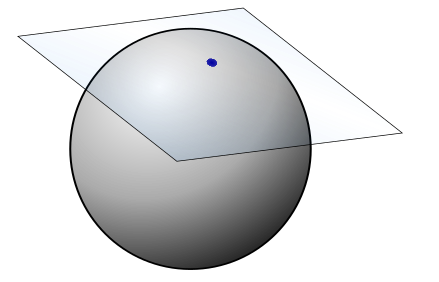
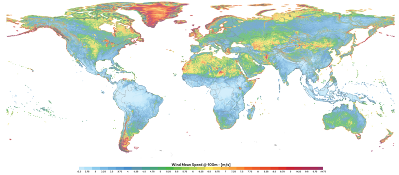
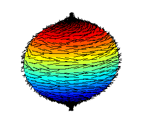

개미 한 마리가 커다란 구슬 위를 기어가고 있다. 이 개미는 꽤 영리해서, 자기가 얼마나 빠르게, 어느 방향으로 움직이고 있는지를 알고 싶어 한다. 평면 위에서라면 이야기가 간단하다. "동쪽으로 초속 2cm"라고 말하면 된다. 속도벡터를 x-y 좌표로 적으면 그만이다. 그런데 구면 위에서는 상황이 미묘해진다.
개미가 북극에 서 있다고 하자. 이 개미가 "위쪽으로 가겠다"고 말한다면, 그 "위"란 어디인가? 구면의 북극에서 바깥쪽을 가리키는 벡터는 구면을 뚫고 나가 버린다. 개미는 구면 위에서만 살아야 하므로, 구면을 벗어나는 방향은 허용되지 않는다. 개미의 속도벡터는 구면에 “접하는” 방향, 즉 구면의 표면을 스치듯이 지나가는 방향이어야 한다. 마치 테이블 위에 놓인 농구공의 꼭대기에 종이 한 장을 올려놓았을 때, 그 종이가 놓이는 평면 — 바로 그 평면이 개미가 속도를 말할 수 있는 공간이다.

여기서 핵심적인 의문이 떠오른다. 이 "접하는 평면"은 구면 자체가 아니다. 구면은 휘어져 있지만, 속도벡터가 사는 공간은 평평한 평면이다. 게다가 이 평면은 점마다 다르다 — 북극에서의 접평면과 적도 위 한 점에서의 접평면은 방향이 다른 별개의 평면이다. 그렇다면 속도벡터는 대체 “어디에” 사는 것인가? 구면 위도 아니고, 3차원 공간 전체도 아니고, 각 점에 붙어 있는 어떤 별도의 공간에 사는 것이다. 이 별도의 공간이 무엇인지를 이해하는 것이 이 장의 주제다.
조금 더 구체적으로 생각해 보자. 개미가 북극에서 적도를 향해 남쪽으로 내려가기 시작했다. 경도 0도를 따라 내려간다고 하자. 매 순간 개미의 속도벡터는 그 점에서의 접평면에 놓인다. 그런데 북극에서의 접평면과 적도에서의 접평면은 완전히 다른 평면이다. 개미가 이동하면서 자기 속도벡터가 “사는 공간” 자체가 바뀌는 것이다. 이것은 마치 아파트에서 방을 옮길 때마다 가구 배치가 바뀌는 것과 같다 — 각 방(접선공간)은 구조는 같지만 서로 다른 별개의 공간이다.
물리학에서도 이 문제는 절실했다. 뉴턴 역학에서 물체의 상태는 위치와 속도로 결정된다. 평면 위의 운동이라면 위치 (x,y)와 속도 (vx,vy)를 합쳐 4차원 공간 R4에 점 하나로 표현하면 된다. 그런데 구면 위의 운동은? 위치는 구면 위에 있고, 속도는 그 점의 접평면 위에 있다. 위치와 속도를 함께 담는 공간 — 이것이 바로 접선다발 TM의 물리적 동기다.
더 근본적인 질문도 있다. 우리가 이 구면을 3차원 공간에 넣어서 생각했기 때문에 "접평면"을 시각적으로 떠올릴 수 있었다. 그런데 만약 구면이 아무 곳에도 박혀 있지 않고, 그 자체로 독립된 세계라면? 2차원 구면 위에 사는 존재가, 바깥의 3차원 공간을 전혀 모른 채로도, 자기 점에서의 "가능한 방향"을 정의할 수 있을까? 놀랍게도 그 답은 "예"이다. 그리고 그 방법이 바로 접선공간의 내재적 정의다.
패턴
이 질문을 풀어가기 위해 더 단순한 상황부터 보자. 원(circle) S1 위를 움직이는 점을 생각하자. 원 위의 한 점 p에서 출발하는 모든 부드러운 곡선 γ(t)를 생각한다. γ(0)=p이고, γ는 원 위에 머무른다. 이때 t=0에서의 속도 γ′(0)는 원의 접선 방향을 가리킨다. 가능한 속도는 빠르거나 느리거나, 시계방향이거나 반시계방향이거나 — 결국 하나의 실수로 결정된다. 즉 원(1차원 매니폴드) 위 한 점에서의 접선공간은 R1과 같다.
구면 S2에서도 같은 논리가 작동한다. 한 점 p를 지나는 모든 곡선의 속도벡터를 모으면, 가능한 속도의 집합은 2차원 평면을 이룬다 — 바로 TpS2≅R2이다. 일반적으로 n차원 매니폴드의 각 점에서 접선공간은 Rn과 동형인 벡터공간이 된다. 핵심 통찰은 이것이다:
각 점에는 자기만의 "방"이 있다. 이 방 안에는 그 점에서 출발할 수 있는 모든 방향과 속력의 조합이 들어 있다. 이것이 접선공간 TpM이다.
이 방은 매니폴드 자체와 다른 공간이다. 매니폴드가 아무리 구불구불해도, 각 점의 접선공간은 항상 평평한 벡터공간이다. 이것은 마치 울퉁불퉁한 산의 각 지점에 아주 작은 평탄한 헬리패드를 놓는 것과 같다.
모든 방을 합치면 하나의 새로운 공간이 된다. 모든 점의 접선공간을 한데 모은 것을 접선다발 TM이라 부른다. M이 n차원이면, TM은 2n차원의 매니폴드가 된다 — 위치 n개, 속도 n개.
이제 벡터장이라는 개념도 자연스럽게 따라온다. 일기예보에서 보는 바람 지도를 생각해 보라. 지구 표면의 매 지점에 바람의 방향과 세기를 나타내는 화살표가 하나씩 붙어 있다.

이것이 바로 벡터장이다 — 매니폴드의 각 점 p에서 접선공간 TpM의 원소를 하나 골라, 그것이 점에 따라 부드럽게 변하도록 한 것이다.
여기서 재미있는 사실 하나. 구면 S2의 접선다발 TS2를 생각하면, 위치 2개 + 속도 2개 = 4차원 매니폴드가 된다. 그런데 이 4차원 매니폴드는 S2×R2처럼 "단순한 직적"이 아니다. 접선다발의 전역적 구조가 비자명하다(non-trivial)는 것인데, 이것은 유명한 **모공정리(Hairy Ball Theorem)**와 관련된다: 구면 위에서 모든 점에 0이 아닌 접선벡터를 연속적으로 배정하는 것은 불가능하다. 쉽게 말해, 털이 빽빽한 공을 아무리 빗어도 어딘가에는 머리의 가마처럼 털이 한 점을 중심으로 소용돌이치거나 곤두서는 곳이 생긴다. 그 점에서는 털이 누울 방향이 없으므로 벡터장이 0이 된다.

한편, 속도를 “측정하는” 도구도 필요하다. 온도계가 온도를 숫자로 바꾸듯, 접선벡터를 받아서 실수 하나를 돌려주는 선형 함수가 있다. 이런 함수들의 집합이 여접공간 Tp∗M이다. 등고선 지도를 생각하면 직관이 온다: 등고선 자체는 화살표가 아니라 "높이의 변화율을 재는 장치"이다. 벡터(방향)를 넣으면 "그 방향으로 얼마나 올라가는가"라는 숫자가 나온다. 접선벡터가 화살표라면, 여접벡터는 눈금자인 셈이다.
좌표 (x1,…,xn)를 잡으면, 접선공간의 자연스러운 기저는 {∂/∂x1,…,∂/∂xn}이고, 여접공간의 자연스러운 기저는 {dx1,…,dxn}이다. 이 둘은 쌍대(dual) 관계에 있다.
채점 기준표(여접벡터)와 답안(접선벡터)의 관계와 비슷하다. “1번 문항만 채점하는” 기준표 dx1에 답안 ∂1을 넣으면 1점, ∂2를 넣으면 0점이 나온다.
정리
매니폴드 M 위의 각 점 p에는 접선공간TpM이 내재적으로 — 즉 M을 어딘가에 박아 넣지 않고도 — 자연스럽게 정의된다.
내재적 정의는 이렇다. 점 p를 지나는 부드러운 곡선들의 집합을 생각하자. 두 곡선 γ1, γ2가 p에서 "같은 속도"를 갖는다는 것을 동치관계로 정의한다: p 근방의 좌표계 x 하나를 골라 (x∘γ1)′(0)=(x∘γ2)′(0)이면 동치로 본다. 연쇄법칙 때문에 한 좌표계에서 같으면 다른 모든 좌표계에서도 같으므로, 어느 좌표계를 고르든 결과는 같다. 이 동치류 하나하나가 접선벡터이며, 모든 동치류의 집합이 TpM이다. 이 정의는 좌표계를 바꿔도 일관되며, 결과적으로 TpM은 dimM차원의 벡터공간이 된다.
또 다른 동치적 정의는 "방향미분 작용소"를 이용하는 것이다. p에서의 접선벡터를 "p 근방의 함수들에 작용하는 미분 연산자"로 보는 관점이다. 즉 v∈TpM은 C∞(M)→R인 선형 사상으로서 라이프니츠 법칙 v(fg)=v(f)g(p)+f(p)v(g)를 만족한다. 이 두 정의가 같은 것을 기술한다는 사실 자체가 미분기하학의 초기 성과 중 하나다.
좌표 (x1,…,xn)를 잡으면 TpM의 기저는 p에서의 좌표 기저벡터 ∂/∂x1,…,∂/∂xn이고, 임의의 접선벡터는 이들의 선형결합으로 쓸 수 있다.
∂ϕ의 길이가 sinθ라는 점에 주목하자. 경도를 1만큼 바꿀 때 실제로 움직이는 거리가 적도에서는 1이지만 북극 근처에서는 거의 0이다. 기저벡터는 "좌표 1칸만큼 움직이는 화살표"이지 단위벡터가 아니다.
이제 개미가 적도 위의 점 (θ,ϕ)=(π/2,0)을 지나며 곡선 γ(t)=(π/2−t,t)를 따라 북동쪽으로 간다고 하자. 좌표를 시간으로 미분하면 성분이 바로 나온다: θ˙=−1, ϕ˙=1. 그러므로 속도는 γ′(0)=−∂θ+∂ϕ이다. 이 점에서 ∂θ=(0,0,−1), ∂ϕ=(0,1,0)이므로 3차원 화살표로는 (0,1,1)이다.
검산해 보자. 곡선을 3차원 위치로 쓰면 (cos2t,costsint,sint)이고, 이것을 t=0에서 미분하면 정확히 (0,1,1)이 나온다. 성분 (−1,1)은 구면 안에서만 사는 개미가 자기 좌표로 적은 속도이고, (0,1,1)은 바깥에서 본 같은 속도다.
정의
접선벡터 (순간 속도 / Instantaneous Velocity) — 곡선의 한 점에서의 방향과 크기. "지금 나는 어느 쪽으로 가고 있는가?"에 대한 답이다. 형식적으로는 p를 지나는 곡선들의 동치류, 또는 p에서의 방향미분 작용소.
접선공간 (방향의 방 / Direction Room, TpM) — 한 점에 붙은 모든 가능한 방향의 집합. 그 점에서 출발할 수 있는 모든 속도벡터의 방(room)이며, dimM차원의 벡터공간이다.
접선다발 (방향의 방 모음 / Direction Room Bundle, TM) — 모든 점의 접선공간을 합친 것. TM=⨆p∈MTpM으로, 그 자체가 2dimM차원의 매니폴드가 된다. 위치와 속도를 동시에 기술하는 무대다.
벡터장 (바람 지도 / Wind Map) — 매니폴드 위의 매 점에 벡터를 하나씩 부드럽게 배정한 것. 일기예보의 바람 지도처럼, 공간의 모든 곳에 화살표가 붙어 있다. 형식적으로는 부드러운 단면(section) X:M→TM.
여접공간 (측정의 방 / Measurement Room, Tp∗M) — 접선벡터를 입력받아 숫자를 뱉는 선형함수들의 공간. 화살표가 아니라 눈금자다 — 벡터를 받아서 "얼마나 큰가"를 재는 측정 장치의 집합.
1-형식 (측정 지도 / Measurement Map) — 매 점에서 접선벡터를 실수로 보내는 선형 함수를 부드럽게 배정한 것. df가 가장 자연스러운 예: 함수 f의 변화율을 각 방향에 대해 재는 장치다.
핵심 인물과 일화
샤를 에레스만 (Charles Ehresmann, 1905–1979)
"접선다발"이라는 말을 처음 들으면, 매니폴드의 각 점에 접선공간이라는 방을 하나씩 붙인다는 이미지가 떠오른다. 이처럼 "점마다 같은 모양의 방을 붙이되 전체가 하나의 매끄러운 공간을 이룬다"는 구조를 일반적인 틀로 다듬은 핵심 인물이 샤를 에레스만이다. 1930년대 해슬러 휘트니(Hassler Whitney)가 구면다발로 길을 열었고, 에레스만이 그것을 오늘날의 파이버 다발 이론으로 정리했다.
에레스만은 스트라스부르 출신의 프랑스 수학자였다. 1930년대, 엘리 카르탕(Élie Cartan)의 지도 아래 미분기하학을 공부하던 그는 하나의 질문에 사로잡힌다: 매니폴드 위에서 "연속적으로 변하는 구조"를 어떻게 통일적으로 기술할 수 있는가?
카르탕은 이미 "움직이는 틀(repère mobile)"이라는 기법으로 곡면의 기하학을 다루고 있었다. 하지만 에레스만은 더 추상적인 구조가 필요하다고 느꼈다. 1940년대 초, 그는 **파이버 다발(fibre bundle)**의 일반 이론을 세운다 — 밑공간(base space)의 각 점에 같은 유형의 공간(fibre)을 붙이되, 전체가 부드러운 매니폴드를 이루는 구조이다.
접선다발 TM은 파이버 다발의 가장 자연스러운 예시다: 밑공간은 매니폴드 M, 각 점의 파이버는 접선공간 TpM. 에레스만의 기여는 이 구조를 개별 사례가 아닌 일반적 틀로 정립한 것이다. 같은 틀 안에서 벡터다발, 주다발, 연관다발 등이 모두 한 가족으로 묶인다.
에레스만은 또한 "에레스만 접속"이라는 개념도 도입하여, 파이버 다발 위에서의 평행이동을 정의하는 일반적 방법을 제시했다. 이것은 훗날 양-밀스 게이지 이론의 수학적 기초가 된다.
그는 부르바키 모임의 초기 구성원이기도 했지만, 이후에는 범주론의 관점에서 기하학의 “구조” 자체를 다시 세우려는 독자적인 길을 걸었다. "구조"라는 단어에 수학적 정밀성을 부여한 사람 — 그것이 에레스만이 수학에 남긴 유산이다.
직접 움직여 보기
구면 위의 한 점에 접평면을 붙이고, 그 점을 지나는 곡선의 속도를 좌표 기저 ∂θ, ∂ϕ로 나누어 보는 위젯이다. 점을 북극 쪽으로 옮기면서 같은 성분 (vθ,vϕ)가 실제로 얼마나 빠른 속도가 되는지, 기저벡터 ∂ϕ가 어떻게 줄어드는지 지켜보자. 구면은 끌어서 돌려 볼 수 있다.
연습문제와 같이 풀기
각 문제를 먼저 혼자 풀어 본 뒤, 바로 아래 세션에서 선생님과 두 학생이 어떻게 풀어 가는지 따라가 보자.
문제 1 — 접선공간은 몇 차원인가
확인 3차원 공간에 놓인 구면 S2의 한 점 p에서 접선공간 TpS2는 몇 차원인가? 접선다발 TS2는 몇 차원 매니폴드인가?
같이 풀기 세션 1
김민준3차원이요. numpy로 접평면 위 벡터를 뽑아 보면 성분이 (x,y,z) 세 개씩 나오거든요. 그러면 접선다발은 위치 3개에 속도 3개니까 6차원이겠네요.
이서연성분이 세 개라고 3차원은 아니지. 접평면 위의 벡터는 법선과 수직이라는 조건을 하나 만족해야 하잖아. 자유롭게 고를 수 있는 건 두 개야.
선생님민준 학생, 접평면 위 벡터 (a,b,c)를 하나 마음대로 골라 보세요. 몇 개까지 마음대로 정할 수 있어요?
김민준두 개를 정하면 세 번째는 법선과 수직이 되게 저절로 정해지네요. 그럼 TpS2는 2차원이고, 구면 위의 위치도 2개니까 TS2는 4차원이에요.
선생님맞아요. 성분의 개수는 우리가 구면을 어디에 넣어 두었느냐에 달려 있지만, 차원은 구면이 스스로 정해요.
김민준보고서 표에 열이 세 개 있어도 셋째 열이 앞의 두 열로 계산되는 합계 열이면, 조교님이 “실제로 입력한 값은 두 개네요” 하시는 거랑 같네요.
문제 2 — 동쪽 화살표를 극좌표로 부르면
계산 평면의 점 (x,y)=(1,1)에서 동쪽을 가리키는 벡터 v=∂x를 극좌표 기저 ∂r, ∂θ로 나타내라. 즉 성분 (vr,vθ)를 구하라.
같이 풀기 세션 2
김민준이건 그림으로 보여요. 점 (1,1)에서 바깥쪽 단위벡터 r^와 반시계 방향 단위벡터 θ^가 서로 45도로 벌어져 있으니까, 동쪽은 21r^−21θ^예요. 그러니까 (vr,vθ)=(1/2,−1/2)요.
이서연난 변환 규칙으로 했어. 야코비 행렬을 곱하면 되니까 vr=∂x/∂r=cosθ=1/2, vθ=∂x/∂θ=−rsinθ=−1. 둘째 성분이 민준이랑 다르네.
선생님두 답이 다르니 검산해 봅시다. 성분을 기저에 곱해서 다시 더하면 (1,0)이 나와야 해요. 서연 학생, 평면에서 ∂θ는 어떤 화살표예요?
이서연위치 (rcosθ,rsinθ)를 θ로 미분하면 (−rsinθ,rcosθ)니까, 이 점에서 (−1,1)이에요. ∂r은 (1/2,1/2)고요. 그러면 제 답은 21(1/2,1/2)−1⋅(−1,1)=(3/2,−1/2)이 돼요.
이서연어, (1,0)이 안 나와요. 제가 행렬을 거꾸로 썼네요. 새 성분은 새 좌표를 옛 좌표로 미분한 ∂r/∂x, ∂θ/∂x로 만들어야 하는데, 옛 좌표를 새 좌표로 미분한 걸 썼어요.
선생님그래요. ∂r/∂x=x/r=1/2, ∂θ/∂x=−y/r2=−1/2예요. 그럼 민준 학생 답은 어디서 틀렸을까요?
김민준저는 방향은 맞게 봤는데… 아, ∂θ는 길이가 r=2라서 θ^랑 달라요. 같은 화살표를 만들려면 계수를 2로 나눠야 하니까 −1/2÷2=−1/2. 서연이 고친 답이랑 같아요.